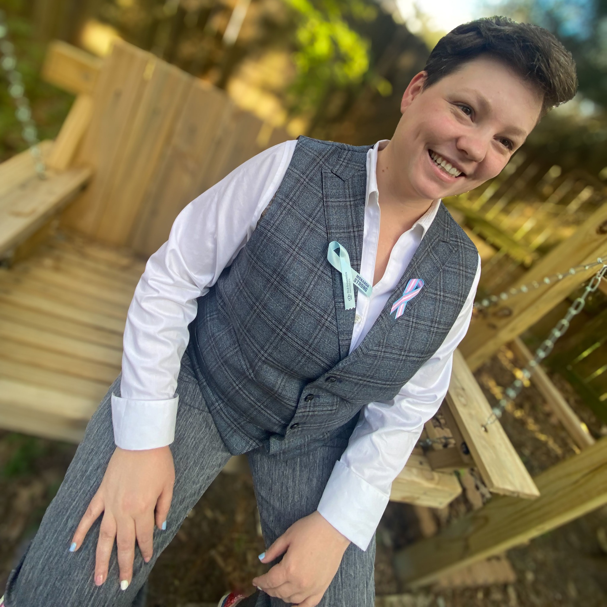

Researcher · Educator · Advocate
I work at the intersection of technology, learning, and equity — and I believe the path here matters as much as the destination.
I am a researcher, educator, and advocate working at the intersection of technology, learning, and equity. My work focuses on how generative AI shapes academic self-regulated learning in higher education, a question that grew from watching a powerful new technology emerge in real time and feeling urgency about understanding its impact before educators could be proactive rather than reactive.
My path here was anything but linear. I grew up in a military family, the child of a Navy veteran whose career-ending injury reshaped our circumstances in ways that would define my relationship with education for years. I dropped out of high school, earned my GED, and found my way to community college before I had any sense of what was possible. I completed a BA in Psychology and an MA in Social Sciences from Troy University while living in four states, raising two sons, and navigating life as a military spouse. What once felt like a series of failures — deferred enrollments, interrupted semesters, cross-country moves mid-degree — I now understand as a nontraditional path that shaped everything that followed. During those years I also worked as a paraprofessional supporting students with disabilities in Hawaii, and was later diagnosed with ADHD myself. Both experiences gave me an early and personal understanding that the barriers many learners face are features of poorly designed environments, not limitations of the learners themselves.
For eight years, I worked at Solutions for Information Design (SOLID), a research and technology consulting firm specializing in military-connected education and credentialing. I rose from Research Assistant to Innovation Strategist and R&D Team Lead, leading national initiatives including MilGears and Map My Future. That work — helping service members and veterans translate their skills into civilian credentials and career pathways — deepened my understanding of how technology can either support or complicate learners' ability to reach their goals.
In 2025, I stepped away from that role to focus entirely on completing my dissertation at ODU, where I now serve as a Graduate Research and Teaching Assistant. I teach undergraduate and graduate courses while advancing research I hope will give practitioners grounded, evidence-based guidance on integrating generative AI in ways that support learning.
I share my story openly because I believe visibility matters. The students I work with are navigating jobs, families, deployments, and setbacks of their own. When they see that their instructor once dropped out of high school, I hope they understand something important: where you are right now is not where your story ends.
PhD, Educational Psychology & Program Evaluation In progress
Old Dominion University, Darden College of Education
Dissertation: AI engagement and academic self-regulated learning in higher education
Alternative Teaching Licensure
EducateVA
Endorsements: Business Education & Marketing Education · Praxis certified in both areas · Level I complete · Level II in progress
Summer Institute in Survey Research Techniques
University of Michigan Institute for Social Research
Diversity Fellowship recipient
MS, Social Science
Troy University
Emphasis (18 credits) in Sociology
BS, Psychology
Troy University
AA, Liberal Arts
Tidewater Community College
Creative Writing
What She Told Me
My creative nonfiction piece What She Told Me was accepted for publication in Constellate Anthology, Volume III. Writing has always been a way I process the distance between where I've been and where I'm going.
Life Outside Research
The Human Element
I'm a military spouse, a parent of two, and a firm believer that being a whole person makes you a better researcher and educator. When I'm not writing or teaching, I'm reading fantasy, watching K-dramas, or losing track of time in a video game. I think that's fine.